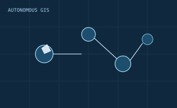

01 / AUTONOMOUS GIS
Autonomous GIS & Spatial Reasoning
Designing agentic geospatial systems that parse intent, reason over spatial knowledge, and support interoperable geospatial intelligence services.